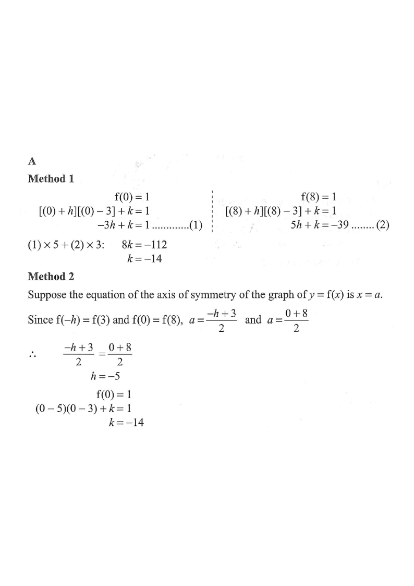

Scroll the solution to highlight each stage.
Let $f(x)=(x+h)(x-3)+k$, where $h$ and $k$ are constants. If $f(0)=1$ and $f(8)=1$, find $k$.

The question gives two function values:
$$f(0)=1 \qquad \text{and} \qquad f(8)=1$$
Substitute $x=0$ and $x=8$ into $f(x)=(x+h)(x-3)+k$.
At $x=0$:
$$(0+h)(0-3)+k=1 \;\Rightarrow\; -3h+k=1 \quad \cdots (1)$$
At $x=8$:
$$(8+h)(8-3)+k=1 \;\Rightarrow\; 5(8+h)+k=1 \;\Rightarrow\; 5h+k=-39 \quad \cdots (2)$$
Subtract $(1)$ from $(2)$:
$$(5h+k)-(-3h+k)=-39-1$$
$$8h=-40 \;\Rightarrow\; h=-5$$
Substitute $h=-5$ into $(1)$:
$$-3(-5)+k=1 \;\Rightarrow\; 15+k=1 \;\Rightarrow\; k=-14$$
Since $f(0)=f(8)=1$, the axis of symmetry bisects $x=0$ and $x=8$:
$$a=\frac{0+8}{2}=4$$
Also $f(-h)=f(3)=k$, so the axis also bisects $x=-h$ and $x=3$:
$$a=\frac{-h+3}{2}=4 \;\Rightarrow\; -h+3=8 \;\Rightarrow\; h=-5$$
Then $f(0)=(0-5)(0-3)+k=1 \Rightarrow 15+k=1 \Rightarrow k=-14$.
We found $h=-5$ and $k=-14$.